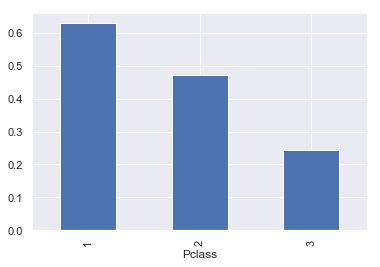
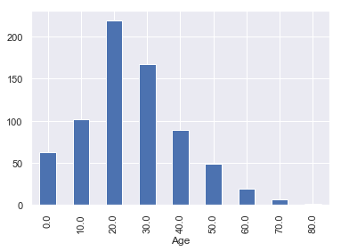
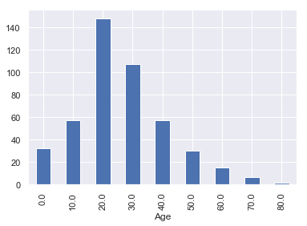

GroupBy and Aggregate, Transform
Groupby and Aggregation (Split-Apply-Combine):
This notebook will provide a walkthrough for data splitting (mapping) with groupby(), apply some action (e.g.,count(), sum(), mean(), std()) and finally combine through aggregation(), transform() action (reduction).
Read more about these functionality from Pydata documentation for Group by (split-apply-combine)[1]. Some parts of this notebook are taken from EuroScipy 2016 Pandas Tutorial by Joris Van den Bossche and Nicholas Devenish[2]
import pandas as pd
import numpy as np
import seaborn as sns
import matplotlib.pyplot as plt
%matplotlib inline
sns.set()
Load data
titanic = pd.read_csv('data/titanic.csv')
titanic = titanic.set_index('Name')
titanic.head(2)
| PassengerId | Survived | Pclass | Sex | Age | SibSp | Parch | Ticket | Fare | Cabin | Embarked | |
|---|---|---|---|---|---|---|---|---|---|---|---|
| Name | |||||||||||
| Braund, Mr. Owen Harris | 1 | 0 | 3 | male | 22.0 | 1 | 0 | A/5 21171 | 7.2500 | NaN | S |
| Cumings, Mrs. John Bradley (Florence Briggs Thayer) | 2 | 1 | 1 | female | 38.0 | 1 | 0 | PC 17599 | 71.2833 | C85 | C |
The groupby operation (split-apply-combine)
is followed by multiple functionality e.g., groupby.aggregate(),groupby.count() groupby.size(),groupby.mean().
The "group by" concept: we want to apply the same function on subsets of your dataframe, based on some key to split the dataframe in subsets
This operation is also referred to as the "split-apply-combine" operation, involving the following steps:
- Splitting the data into groups based on some criteria
- Applying a function to each group independently
- Combining the results into a data structure

1. Simple Groupby and aggregate example:
Lets create a sample dataframe to operate groupby() followed by size() and aggregate() with np.sum() seperately.
df = pd.DataFrame({'key':['A','B','C','A','B','C','A','B','C'],
'data': [0, 5, 10, 5, 10, 15, 10, 15, 20]})
df.head(2)
| key | data | |
|---|---|---|
| 0 | A | 0 |
| 1 | B | 5 |
The groupby() operation followed by size() does not return a DataFrame object, it becomes a pandas Series object.
result = df.groupby('key').size()
print("Object type:", type(result))
print(result)
Object type: <class 'pandas.core.series.Series'>
key
A 3
B 3
C 3
dtype: int64
The groupby() operation followed by aggregate() returns a DataFrame object.
result = df.groupby('key').aggregate(np.sum)
print("object type:", type(result))
result
object type: <class 'pandas.core.frame.DataFrame'>
| data | |
|---|---|
| key | |
| A | 15 |
| B | 30 |
| C | 45 |
2. Exercise with Titanic Dataset
titanic.groupby('Sex').size()
Sex
female 314
male 577
dtype: int64
titanic.groupby('Sex')['Age'].mean()
Sex
female 27.915709
male 30.726645
Name: Age, dtype: float64
titanic['Survived'].sum() / len(titanic['Survived'])
0.3838383838383838
df25 = titanic[titanic_df1['Age'] <= 25]
df25['Survived'].sum() / len(df25['Survived'])
0.4119601328903654
def survival_ratio(survived):
return survived.sum() / len(survived)
titanic.groupby('Sex')['Survived'].aggregate(survival_ratio)
Sex
female 0.742038
male 0.188908
Name: Survived, dtype: float64
titanic.groupby('Pclass')['Survived'].aggregate(survival_ratio).plot(kind='bar')
pass

3. Some advanced groupby operations
df = titanic.copy(deep =True)
df.groupby(df.Age//10 * 10).size().plot(kind='bar',figsize = [6,4])
pass

Male = df[df['Sex'] == 'male']
Male.groupby(Male.Age // 10 * 10).size().plot(kind='bar',figsize = [6,4])
pass

Fare50 = df[df.Fare>50]
Fare50.groupby([ 'Sex']).size()
Sex
female 87
male 73
dtype: int64
Fare50.groupby(['Age', 'Sex','Survived']).size().head(4)
Age Sex Survived
0.92 male 1 1
2.00 female 0 1
4.00 male 1 1
11.00 male 1 1
dtype: int64
4. Groupby followed by transformation: groupby.transform().
The transform operation accepts builting functions e.g., sum, mean, std through keyword. One can define a new function called user defined function to supply inside transform(new_function).
df = pd.DataFrame({'key':['A','B','C','A','B','C','A','B','C'],
'data': [0, 5, 10, 5, 10, 15, 10, 15, 20]})
df.head(2)
| key | data | |
|---|---|---|
| 0 | A | 0 |
| 1 | B | 5 |
df.groupby('key').transform('mean').head(2)
| data | |
|---|---|
| 0 | 5 |
| 1 | 10 |
def normalize(group):
return (group - group.mean()) / group.std()
df.groupby('key').transform(normalize).head(2)
| data | |
|---|---|
| 0 | -1.0 |
| 1 | -1.0 |